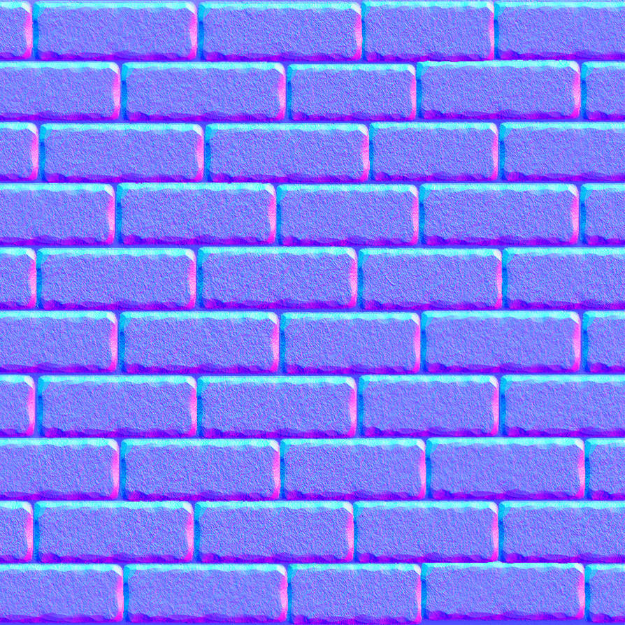

Demo: WebGL Normal Mapping
Name: Dane Christensen Date: 7/14/2026
Camera Angle
Model Rotate (Around X)
Description
Texture Quad with Surface Normals mapped to it using the Tangent, Bitangent, Normal basis transformation (TBN).
